Tundra

the Tundra is a Moor 类型 生物群系 that can be found on 多种星球 in 绝地潜兵 2.
描述
“A perennially chilly 气候 has allowed short, colorful shrubs to flourish across this 行星's 浮出地面.
The 浮出地面 of 冻原星球 are filled by orange grass, flowers, bushes, and pine trees. The 浮出地面 is also very rocky, featuring pillars, boulders and large rock formations on it's 浮出地面.
Thanks to it's rocky 浮出地面, some areas will consist of highlands, featuring coastal cliffs that 掉落 down into the ocean. However on non-highland areas, entire beaches and lakes can be found.
Clouds can be seen filling the blue skies as they cause 轻型, yet permanent drizzling. At night, green aurora borealis will fill the skies, providing some green 轻型 onto the 浮出地面.
Floating around are also blades of grass and leaves that have broken off from their respective plants. For fauna, occasional dragonflies and butterflies can be seen flying around.
浮出地面 Variations
Metropolises
In parks located in Metropolises, green grassy 地形 can be found growing with orange grass blades. Although the 生物群系 has pine trees present in wilderness areas, Earth-like trees will generate with green leaves in this 生物群系 while any pine trees will be missing.
Environmental Conditions
This 生物群系 has 否 environmental conditions.
环境危害
- Smoke Shrooms will 爆炸 into a brown smoke if damaged.
- Deep pits of mud slow down 绝地潜兵 trying to move through.
- Tall Jagged Cliffs 通常 line the edges of the 任务 area and any 绝地潜兵 unlucky enough to fall off will instantly die.
- Water can also be a 威胁 for any 绝地潜兵 deciding to take a swim.
天气
- Cloudy
- Cloudy 天气 is the base 天气 of the Tundra, featuring 轻型 fog, blue skies, and puffy clouds that cover about 50% of the skies. 偶尔, thin veil-like clouds can also be seen covering the skies.
- Sunshower
- Sunshowers are a common 天气 效果 of the Tundra, though not much 变更 visually other than the 外观 of some 轻型 drizzling and wet spots on a 绝地潜兵's screen.
- So little 变更 between the normal Cloudy 天气 and Sunshowers that if it weren't for the raindrops on a 绝地潜兵's screen, the 天气 效果 would go completely unnoticed.
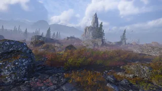
An 示例 of Sunshowers 天气
普通
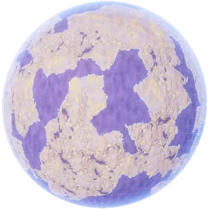
Hologram of a Tundra 行星 轨道武器 shot over a Tundra 行星
轨道武器 shot over a Tundra 行星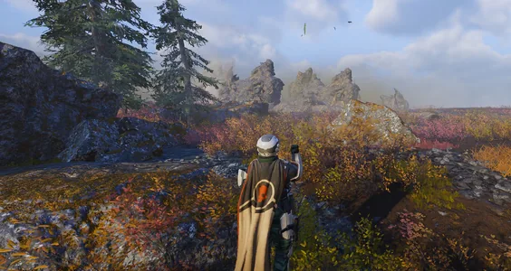
An 概述 over the Taiga Forest 生物群系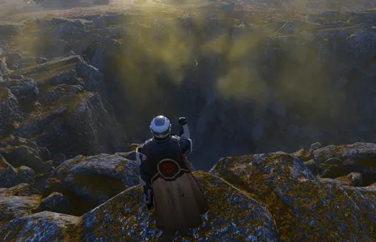
A valley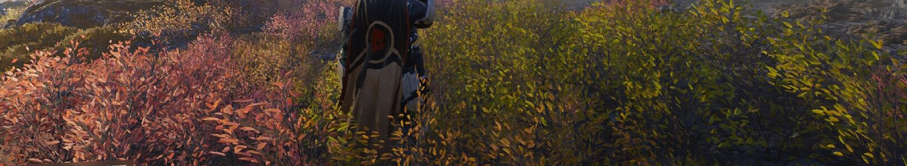
Green and orange bushes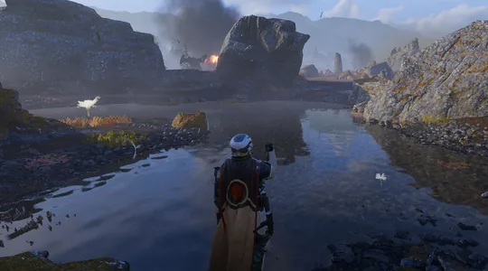
A spring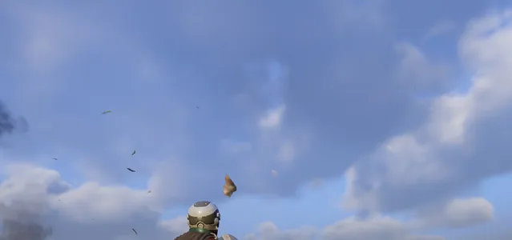
The blue sky, with white clouds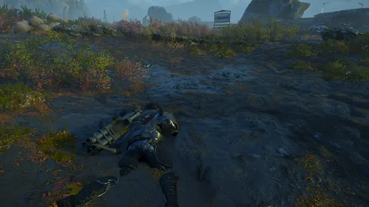
Mud in the Tundra 生物群系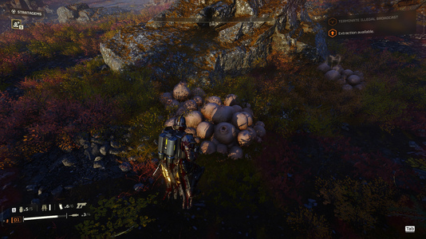
A moor mushroom in a Tundra 生物群系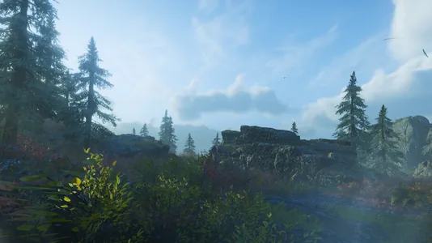
Long field full of foliage- Grassy field
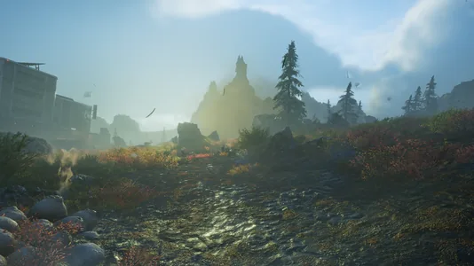
Muddy 浮出地面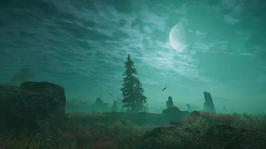
Night
Metropolis
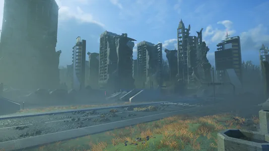
终结族 controlled City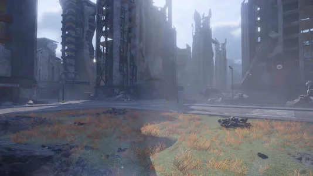
机器人 controlled City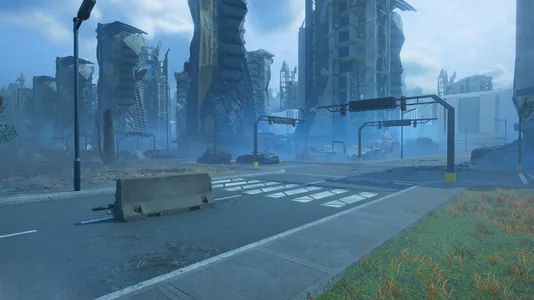
光能者 controlled City
Planets
 Midasburg
Midasburg- Demiurg
- Kerth Secundus
 Aurora Bay
Aurora Bay- Martale
- Crucible
- Shelt
 Trandor
Trandor- Andar
- Diluvia
- Bunda Secundus
- Ilduna Prime
- Ras Algethi
- Duma Tyr
- Angel's Venture